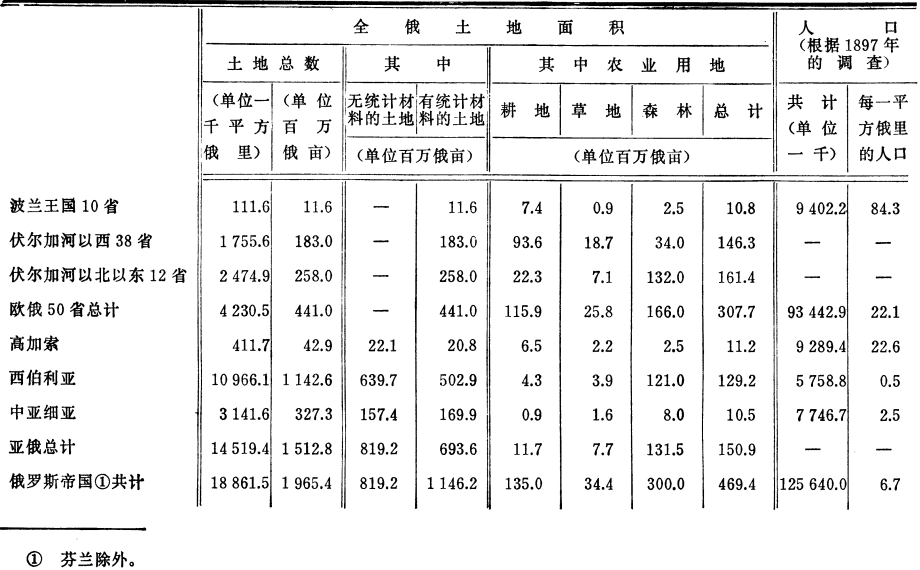

社会民主党在1905―1907年俄国第一次革命中的土地纲领（1907年11―12月）
社会民主党在1905―1907年俄国第一次革命中的土地纲领129
（1907年11―12月）
1905年秋天到1907年秋天这两年的革命，提供了大量有关俄国农民运动、有关农民争取土地的斗争的性质和意义的历史经验。几十年的所谓“和平”演进时期（即千百万人听任一万个上层分子宰割的时期），无论在农民群众同地主直接作斗争方面，还是在人民代表大会上稍微自由地表达农民要求方面，都不可能象这两年那样提供如此丰富的材料，来说明我国社会制度的内部机制。因此，根据这两年的经验来修改俄国社会民主党的土地纲领是绝对必要的，何况俄国社会民主工党现行的土地纲领是斯德哥尔摩代表大会在1906年4月通过的，即在全俄农民代表初次公开提出农民的土地纲领同政府的纲领和自由派资产阶级的纲领相抗衡的前夕通过的。
修改社会民主党的土地纲领必须拿有关俄国土地占有情况的最新材料作基础，以便尽量确切地判明当代各种土地纲领的经济背景究竟是什么，伟大的历史性斗争的目的究竟是什么。应该把实际斗争的这个经济基础同它在各阶级代表的纲领、声明、要求和理论中的思想政治反映作一对照。马克思主义者应该采取、也只应该采取这样的方法，马克思主义者和小资产阶级社会主义者不同，后者总是从“抽象的”正义，从“劳动原则”理论等等出发，马克思主义者和自由派官僚也不同，后者在任何一次变革中总是大谈改良实际可行，大谈“国家”观点，以此来掩饰其对剥削者的利益的维护。
第一章 俄国土地变革的经济基础和实质
1．欧俄土地占有情况
1907年中央统计委员会公布的《1905年度地产统计》，使我们能够确切地了解欧俄50个省的农民和地主分别占有的土地面积。我们先举出一些总的材料。欧俄（50个省）的总面积是4230500平方俄里，合44080万俄亩（见1897年1月28日的调查材料）。1905年度的地产统计只统计了39520万俄亩，这些土地可以分为以下三大类：
| | （单位百万俄亩） |
| （一）私有土地 | 101.7 |
| （二）份地130 | 138.8 |
| （三）官地、教会和其他机关土地 | 154.7 |
| 欧俄土地共计 | 395.2 |
从这个总数中首先应该除去远北方的官地，其中一部分是冻土带，一部分是最近还无法用于农业的森林。这种土地在“北方地区”（阿尔汉格尔斯克、奥洛涅茨和沃洛格达三省）有10790万俄亩。不言而喻，我们如果把所有这些土地统统抛开不算，那就把不宜耕作的土地估计得太多了。我们只要指出以下一点就够了：象亚?阿?考夫曼先生这样一位谨慎的统计学家，就认为沃洛格达和奥洛涅茨两省有2570万俄亩森林（已经除去占总面积25％的多林地区）可以补分给农民(1)。不过因为我们现在所讲的是全部土地，并没有把森林除开，在确定用于农业的土地资产时，最好谨慎一点。除去10790万俄亩，还剩下28730万俄亩。凑成整数，我们就算作28000万俄亩，把一部分城市土地（共200万俄亩）和维亚特卡、彼尔姆两省的一部分官地（该两省的官地共为1630万俄亩）抛开不算。
欧俄可耕地总的划分如下：
| | （单位百万俄亩） |
| （一）私有土地 | 101.7 |
| （二）份地 | 138.8 |
| （三）官地和机关土地 | 39.5 |
| 欧俄共计 | 280.0 |
现在必须把小地产和大地产（尤其是最大的地产）的数字分别列出，以便具体地了解在俄国革命中农民争取土地的斗争的背景。不过这类数字是不完全的。在13880万俄亩份地中，按地产大小划分的有13690万俄亩。在10170万俄亩私有土地中，按地产大小划分的有8590万俄亩；其余1580万俄亩属于各“村团和协作社”。我们研究一下后一类土地的构成，就会看到其中有1130万俄亩土地是属于各农民村团和协作社的；就是说，总的说来这是小地产，可惜没有按地产大小来划分。其次，有370万俄亩土地属于1042个“工商业的、工厂的以及其他的”协作社。其中占有土地1000俄亩以上的协作社有272个，共占有土地360万俄亩。这显然是些地主的大地产。这种大地产主要集中在彼尔姆省。该省9个这样的协作社竟占有土地1448902俄亩！大家知道，乌拉尔的工厂有好几万俄亩土地，这是农奴制领主大地产在资产阶级俄国的直接残余。
这样我们便从属于各村团和协作社的土地中划出360万俄亩作为最大的地产。其余的土地虽然没有划分，但总的说来都是小地产。
在3950万俄亩官地及其他土地中，只有510万俄亩的皇族土地131按地产大小划分。这也是半中世纪式的特大的地产。按地产大小划分和未按地产大小划分的土地总数如下：
| | 按地产大小划分的土地 | 未按地产大小划分的土地 |
| | （单位百万俄亩） |
| （一）私有土地 | 89.5① | 12.2 |
| （二）份地 | 136.9 | 1.9 |
| （三）官地和机关土地 | 5.1 | 34.4 |
| 共计 | 231.5 |
48.5 |
| 总计 | 280.0 |
(2)
现在来看看份地按地产大小划分的情况。把我们的资料的数字归纳为比较大的几类，其结果如下表：
份地
| 农户类别 | 户数 | 共有土地
（单位俄亩） |
平均每户有地
（单位俄亩） |
| 5俄亩以下（含5俄亩） | 2857650 | 9030333 |
3.1 |
| 5俄亩以上―8俄亩（含8俄亩） | 3317601 |
21706550 | 6.5 |
| 8俄亩以下的共计（含8俄亩） | 6175251 |
30736883 | 4.9 |
| 8俄亩以上―15俄亩（含15俄亩） | 3932485 |
42182923 | 10.7 |
| 15俄亩以上―30俄亩（含30俄亩） | 1551904 |
31271922 | 20.1 |
| 超过30俄亩 | 617715 | 32695510 |
52.9 |
| 欧俄共计 | 12277355 | 136887238 |
11.1 |
从以上的材料可以看出，一半以上的农户（1230万户中有620万户）每户只有8俄亩以下的土地，一般说来，这是绝对不够维持全家生活的。每户占有土地15俄亩以下的为1010万户（他们共有土地7290万俄亩），也就是说，在目前的农业耕作技术水平下，有4／5以上的农户过着半饥半饱的生活。中等的富裕农户（按私有土地数量来说）在1230万户中占220万户，拥有13690万俄亩土地中的6390万俄亩。能称得上富有的只是拥有超过30俄亩土地的农户，这类农户一共只有60万户，占农户总数的1／20。它们拥有的土地则几乎占总数的1／4：在13690万俄亩中占有3270万俄亩。为了判断这类土地富有的农户包括哪几种农民，我们要指出，哥萨克132在其中占第一位。在每户拥有超过30俄亩土地的农户中，有266929户是哥萨克农户，共有土地14426403俄亩，也就是说，这类农户在哥萨克农户中占绝大多数（在欧俄有278650户哥萨克农民，共有土地14689498俄亩，平均每户52．7俄亩）。
要对各类农户的经营规模（而不是所占的份地多少）的大致情况作出判断，我们现在可以依据的全俄材料只有马匹的统计材料。根据1888―1891年最新的军马调查，欧俄48个省各类农户的情况如下：
| 贫苦农户 | 无马的 | 2765970户 |
| | 有1匹马的 | 2885192户 |
| 中等农户 | 有2匹马的 | 2240574户 |
| | 有3匹马的 | 1070250户 |
| 富裕农户 | 有4匹马或4匹以上的 | 1154674户 |
| 共计 | 10116660户 |
总之，贫苦农户占一半以上（在1010万户中占560万户），中等农户约占1/3（每户有2―3匹马的为330万户），富裕农户占1/10强（在1010万户中占110万户）。
现在再来看看私有地产分配情况。这方面的统计资料没有把最小的地产划分得十分清楚，却提供了关于特大地产的详细材料。
| | |
欧俄私有地产分配情况 |
| 农户类别 | 户数 |
共有土地
（单位俄亩） | 平均每户有地
（单位俄亩） |
| 10俄亩和10俄亩以下 | 409864 | 1625226 |
3.9 |
| 10俄亩以上―50俄亩（含50俄亩） | 209119 |
4891031 | 23.4 |
| 50俄亩以上―500俄亩（含500俄亩） | 106065 |
17326495 | 163.3 |
| 500俄亩以上―2000俄亩（含2000俄亩） | 21748 |
20590708 | 947 |
| 2000俄亩以上―10000俄亩（含10000俄亩） | 5386 |
20602109 | 3825 |
| 超过10000俄亩 | 699 | 20798504 |
29754 |
| 超过500俄亩的共计 | 27833 | 61991321 |
2227 |
| 欧俄总计 | 752881 | 85834073 |
114 |
第一，我们从这里可以看到大地产占绝对优势，619000户小土地占有者（每户不到50俄亩）一共只占有650万俄亩土地。第二，我们看到有占地极多的大地产：699个私有者，几乎每人占有3万俄亩土地！28000个私有者集中了6200万俄亩土地，即平均每个私有者占有2227俄亩土地。这些大地产绝大多数都属于贵族，在27833户中他们占了18102户，共占土地44471994俄亩，即占大地产总面积70％以上。从这些数字中可以十分明显地看出中世纪农奴主－地主的土地占有情况。
2．斗争是为了什么？
1000万个农户拥有7300万俄亩土地。28000个贵族大地主和暴发户大地主却拥有6200万俄亩土地。这就是农民争取土地的斗争的主要背景。在这一主要背景下，耕作技术惊人地落后，农业荒废不堪，农民群众备受压迫和折磨，农奴制的、徭役制的剥削形式花样百出，这些都是不可避免的。这些尽人皆知的事实，在有关农民经济的大量著作中已有极详细的描述，为了不离开本题，我们在这里只极简单地提一提。上述地产面积同农户规模是极不相符的。在清一色的俄罗斯人居住的省份中，资本主义大农业无疑居于次要地位。这里占主要地位的是大地产中的小农业：这里有形形色色农奴制盘剥性的租佃制、工役（徭役）经济、“冬季雇佣制”，以及用牲口毁苗作为借口或者利用割地来进行盘剥，如此等等。受尽农奴制剥削的农民群众都惨遭破产，其中有的把自己的份地出租给“殷实的”业主。为数甚少的富裕农民逐渐变成农民资产阶级，他们租赁土地，用以进行资本主义方式的经营，剥削数以十万计的雇工和日工。
考虑到俄国经济学界已经完全肯定的这些事实，在谈目前农民争取土地的斗争的问题时，我们应该把土地占有情况分为四大类：（1）大量受农奴制大地产压迫的农户，剥夺大地产同他们有直接的利害关系，他们可以从中直接获得最多的好处。（2）为数甚少的中等农民，他们现在占有的土地面积接近中等水平，勉勉强强可以维持经营。（3）为数甚少的富裕农民，他们正在变成农民资产阶级，并且通过一系列逐步的过渡同用资本主义方式经营的地产联系起来。（4）农奴制大地产，其规模之大远远超过现阶段俄国资本主义农庄，其大部分收入是靠盘剥农民和对农民进行工役制剥削得来的。
自然，根据现有的地产材料，只能大致地、约略地、概括地分出这四大类。但是我们至少必须这样来划分，不然的话，就不能勾画出俄国革命中争取土地的斗争的全貌。可以满有把握地预言，数字的局部修正，这一类或那一类上下限的局部变动，都不会使总的情况发生什么重大的改变。重要的不是这种局部的修正，重要的是把力求获得土地的小地产占有者同垄断大量土地的农奴制大地产占有者作一个鲜明的对照。无论是政府的（斯托雷平的）经济学或是自由派的（立宪民主党的）经济学，其主要的虚伪之处就是隐瞒或掩盖这种鲜明的对照。
我们假定上述四类土地占有情况如下：（1）15俄亩以下；（2）15―20俄亩；（3）20―500俄亩；（4）超过500俄亩。为了从整体上来看争取土地的斗争，我们自然要把每一类中的份地和私有地产算在一起。私有地产在我们的材料中分为10俄亩以下和10―20俄亩两类，因此把土地在15俄亩以下的都划为一类就只能是一种大致的划分。由于这种大略的算法和我们采用的凑成整数的办法而可能出现的误差是微不足道的（读者马上就会确信这一点），决不会改变我们的结论。
按照我们的分类，目前欧俄土地分配情况如下：
| | 户数 | 土地俄亩数 |
平均每户土地俄亩数
（单位百万） |
| （一）受农奴制剥削的破产的农民 | 10.5 | 75.0 |
7.0 |
| （二）中等农民 | 1.0 | 15.0 |
15.0 |
| （三）农民资产阶级和资本主义地产 | 1.5 | 70.0 |
46.7 |
| （四）农奴制大地产 | 0.03 | 70.0 |
2333.0 |
| 共计 | 13.03 | 230.0 |
17.6 |
| 未按类别划分的土地 | ― | 50 |
― |
| 共计① | 13.03 | 280.0 |
21.4 |
(3)
这就是产生农民争取土地的斗争的种种关系。这就是农民（平均每户7―15俄亩土地，加上盘剥性的租佃制等等）反抗特大地主（平均每个农庄有2333俄亩土地）的斗争的起点。作为这一斗争的终点的客观趋势是什么呢？显然，这一趋势就是要消灭农奴制大地主土地占有制，把地主占有的土地（根据一定的原则）转交给农民。在受农奴制大地产盘剥的小农业占优势的情况下，这种客观趋势的产生是完全必然的。要象我们说明这场斗争的起点，即说明目前的情况那样，用直观的图表来表示这种趋势，就必须假设一个可能发生的最好的情况，即假定所有的农奴制大地产以及所有未按类别划分的土地都转交给破产农民。这是所有参加当前土地斗争的人多多少少都能清楚地设想到的最好的情况。政府说要“分地”给“穷人”，自由派官吏（立宪民主党人也是这样）说要给少地农民补分土地，劳动派农民说要把占有的土地增加到“消费的”或“劳动的”土地份额，社会民主党人虽然在土地使用形式的问题上有不同的意见，但总的说来接受了民粹派关于分地给贫苦农民的设想（1907年5月26日，策列铁里在第二届杜马第四十七次会议上，同意民粹派分子卡拉瓦耶夫的估计，认为5700万俄亩转让的土地价值65亿卢布，其中25亿由占有土地不到5俄亩的贫苦农民承担。见速记记录第1221页）。总之，尽管地主、官吏、资产阶级、农民和无产阶级对改革的任务和条件有种种不同的看法，但大家都指出同一个趋势，即大地主的土地将转让给最贫穷的农民。至于各阶级对转让土地的规模和条件有哪些根本不同的看法，我们下文另谈。现在，我们再列一个表格来说明斗争可能达到的终点，作为说明斗争起点的那张表格的补充。我们在前面已经指出了目前的情况，现在再来说明到那时可能出现的情况。我们假定3万个地主每个留下100俄亩土地，总共留下300万俄亩，其余的6700万俄亩土地和5000万俄亩未按类别划分的土地都转归1050万户贫苦农民。结果如下：
| | 现在 |
那时 |
| | 户数 | 土地俄亩数
（单位百万） |
平均每户
土地俄亩数 | 户数 |
土地俄亩数
（单位百万） | 平均每户
土地俄亩数 |
| （一）破产的小农 | 10.5 | 75 |
7.0 | ― | ― |
― |
| （二）中等农民 | 1.0 | 15 |
15.0 | 11.5 | 207 |
18.0 |
| （三）富裕农民和资产阶级 | 1.5 | 70 |
46.7 | 1.53 | 73 |
47.7 |
| （四）农奴主－地主 | 0.03 | 70 |
2333.0 | ― | ― |
― |
| 共计 | 13.03 | 230 |
17.6 | 13.03 | 280 |
21.4 |
| 未按类别划分的土地 | ― | 50 |
― | ― | ― |
― |
| 共计 | 13.03 | 280 |
21.4 | ― | ― |
― |
这就是俄国革命中争取土地的斗争的经济基础。这就是这一斗争的起点和这一斗争的趋势即终点，也是（在斗争的参加者看来）最好的结果。
在研究这一经济基础及其思想（以及思想政治的）外衣之前，我们还要先讲一讲可能产生的误会和反对意见。
第一，有人会说，在我所描述的情况中只是假定了分配土地，却还没有研究土地地方公有化、土地分配、土地国有化和社会化等问题。
这是一种误会。在我所描述的情况中，土地占有制的条件是完全抛在一边的，土地转交农民的条件也完全没有涉及（是归农民所有，还是归农民按某种形式使用）。我只是笼统地讲土地都转交给小农，而我国土地斗争的这种趋势是不容怀疑的。小农正在斗争，争取土地转到他们手中。小农业（资产阶级的）正在反对大地产（农奴制的）(4)。土地变革在最好的情况下，除了我所描述的结果，不可能有其他结果。
第二，有人会说，我没有权利设想把全部被没收的土地（或被剥夺的土地，在我的叙述中还没有讲到剥夺的条件）统统转交给土地最少的农民。有人会说，由于经济上的必要，土地应该转归较为富裕的农民。然而这种反对意见也是一种误会。为了证明土地变革的资产阶级性质，我必须假设从民粹主义的观点来看的最好的情况，我必须假定斗争的参加者自己提出的目标已经达到。我必须假设最接近于所谓“土地平分”133的情况，而不谈土地变革以后的结果。如果群众在斗争中获得胜利，群众就会为自己取得胜利的果实。至于这些果实以后会落到谁的手里，那是另一个问题。
第三，有人会说，我所以能得出非常有利于贫苦农民的结果（把全体贫苦农民变成每户有18俄亩土地的中等农民），是由于我夸大了闲置土地总额。有人会说，森林不能作为分给农民的份地，应该把它除外。政府和立宪民主党营垒里的经济学家很可能甚至一定会提出这种反对意见，但这种意见是不正确的。（一）只有一辈子在农奴主－地主面前卑躬屈节的官吏才会以为农民不会合理经营森林，不会利用森林为自己（而不是为地主）取得收益。在警官和俄国自由派看来，问题是：怎样保证庄稼汉有份地？在觉悟工人看来，问题是：怎样把庄稼汉从农奴制大土地占有制中解放出来？怎样粉碎农奴制大地产？（二）我已经把整个北方地区（阿尔汉格尔斯克、沃洛格达、奥洛涅茨三省）以及维亚特卡和彼尔姆两省的一部分地区除外了，那些地方要想在最近的将来把森林地开发成农业用地是困难的。（三）单独计算森林面积，会使计算大大复杂化，而对结果不会有多大改变。例如考夫曼先生，他是个立宪民主党人，可见对待地主的土地是相当慎重的，他认为除去占土地面积25％的多林地区，还有森林地可以用来弥补土地的不足，这样一来，44个省提供的土地总数就有10170万俄亩了。据我计算，47个省约有土地10100万俄亩，也就是7000万俄亩农奴制大地产中的6700万俄亩土地，以及3400万俄亩的官地和其他机关的土地。如果把超过100俄亩的地产一律加以剥夺，那么总数还会增加900―1000万俄亩(5)。
3．立宪民主党的著作家们掩盖斗争的实质
上面所举的地主大产业对于俄国争取土地的斗争所起的作用的材料，还应该作一补充。我国资产阶级和小资产阶级的土地纲领的特征，就是用所谓“土地份额”的种种设想混淆了究竟哪一个阶级是农民最强大的敌人，哪些地产是剥夺的主要对象等问题。
有些人（立宪民主党人和劳动派）主要谈按照某种“份额”分地给农民需要多少土地，而不谈更具体更实际得多的问题：究竟有多少土地可供剥夺。前一种问题提法抹杀了阶级斗争，妄想用所谓“国家”观点来掩盖问题的实质。后一种问题提法把问题的重心完全放在阶级斗争上，放在最能代表农奴制倾向的土地占有者阶层的阶级利益上。
关于“土地份额”这一问题，我们在下面还要讲到。这里只先提一下劳动派中的一个“侥幸的”例外和一位典型的立宪民主党著作家。
在第二届杜马中，人民社会党人杰拉罗夫讲到转让土地究竟会触动百分之几的私有主（1907年5月26日，第四十七次会议）。杰拉罗夫所讲的正是转让土地（强制转让）问题，没有提出没收的问题，而且看来是采取了与我在表格中的假设相同的转让标准，即500俄亩。可惜，第二届杜马的速记记录（第1217页）把杰拉罗夫的这段话记错了，或者是杰拉罗夫先生自己弄错了。记录中写道：强制转让将涉及32％的私有主及其占总数96％的私有土地，据他说，其余的68％的私有主只有4％的私有土地了。其实，不是32％，而应该是3．7％，因为27833个私有主只占总数752881的3．7％，而他们的土地有6200万俄亩，占8580万俄亩的72．3％。不知道是杰拉罗夫先生说错了，还是他引用的数字不对头。但无论如何，在杜马的许多发言人中只有他一个人（如果我们没有弄错的话）谈到了斗争（最直接最具体的意义上的斗争）是为了什么。
那位立宪民主党著作家，就是谢?普罗柯波维奇先生，我们在谈这个问题的时候不能不提到他的“大作”。不错，他其实是个“无题派”，他同资产阶级《同志报》的大多数著作家一样，有时以立宪民主党人的身分出现，有时以社会民主党人孟什维克的身分出现。这是俄国资产阶级知识分子中一小撮彻头彻尾的伯恩施坦分子的典型代表人物，他们动摇于立宪民主党人和社会民主党人之间，他们（在大多数情况下）不参加任何政党，经常在自由派的刊物上唱一些比普列汉诺夫稍右的调子。这里要提一提普罗柯波维奇先生，因为他是最早在报刊上引用1905年地产统计数字的人之一，而且实际上采取了立宪民主党所主张的土地改革的立场。普罗柯波维奇先生在《同志报》（1907年3月13日第214号和4月10日第238号）上发表了两篇文章，同官方统计编制人佐洛塔列夫将军进行论战，因为佐洛塔列夫将军力图证明政府完全可以不采用任何强制转让的办法便把土地改革搞好，证明每一农户只要有5俄亩土地就能经营了！而普罗柯波维奇先生更具自由派特色：他认为每户要有8俄亩。他不止一次说明，这个数目是“根本不够的”，这样的计算是“最起码的”等等，然而在确定“土地的需要量”（普罗柯波维奇先生的上述两篇文章中的第一篇文章的标题）时，仍旧提出了这个数字。他解释说，他用这个数字是“为了避免多余的争论”……大概指的是同佐洛塔列夫先生之流的“多余的争论”吧？普罗柯波维奇先生就这样算出“明显少地”的农户占总数的一半，他正确地计算出，为了每户补足到8俄亩，需要1860万俄亩土地，但是政府似乎总共只有900万俄亩，因此，“不采取强制转让的办法是不行的”。
这位孟什维克化的立宪民主党人或者说立宪民主党化的孟什维克先生，他的计算也好，论断也好，都绝妙地表现了自由派土地纲领的精神实质。关于农奴制大地产以至一切大地产的问题完全被抹杀了。普罗柯波维奇先生只引用了所有50俄亩以上的私有地产的材料。这样一来，斗争究竟是为了什么，这一点被掩盖起来了。一小撮（确确实实是一小撮）大地主的阶级利益被巧妙地掩饰起来了。这里并没有揭露大地主的阶级利益，而是向我们提出所谓靠官地“不行”的“国家观点”。假如靠官地就行的话，那么普罗柯波维奇先生——从他的论断可以得出这样的结论——是一点也不会反对农奴制大地产的……
农民靠这点份地（8俄亩）是要挨饿的。地主被“强制转让”的土地是微不足道的（1800万－900万＝900万俄亩。500俄亩以上地产共有6200万俄亩，而这只占900万俄亩！）。为了实现这样的“强制转让”，就得让地主去强制农民，1861年的情形134就是这样！
普罗柯波维奇先生有意也好，无意也好，自觉也好，不自觉也好，他是正确地反映了立宪民主党土地纲领的地主实质。不过立宪民主党人是很谨慎很狡猾的：他们究竟想剥夺地主多少土地，关于这一点他们认为还是绝口不谈为好。
4．土地变革的经济实质及其思想外衣
我们已经看到，目前土地变革的实质就是要消灭农奴制大地产，造就自由的和富裕的（在目前可能的范围内）农民，使他们不是勉强地混日子，不是在地里苦熬，而是能够发展生产力，提高农业经营水平。这种变革完全不触动，也不可能触动农业中的小规模经营、市场对生产者的统治即商品生产的统治，因为争取重新分配土地的斗争并不能改变这块土地经营中的生产关系。然而我们看到，这一斗争的特点就是：小农业在原属农奴制大地产的土地上蓬勃发展。
民粹派理论是当前这场斗争的思想外衣。全俄农民代表在第一届和第二届杜马中公开提出土地纲领，完全证实了民粹派的理论和纲领是农民争取土地的斗争的真正的思想外衣。
我们已经指出，农民所要争取的土地资产，其中主要的基本的部分就是农奴主的大领地。我们采取了500俄亩这一很高的剥夺标准。但是不难相信，不管怎样降低标准，比如降低到100或50俄亩，我们所作的结论仍然是完全有效的。现在我们把20―500俄亩这第三类再分为三小类：（1）20―50俄亩；（2）50―100俄亩；（3）100―500俄亩。然后再看看这三小类农户各有多少份地和私有地产：
| | 份地 |
私有土地 |
欧俄共计 |
| 类别 | 户数 | 土地俄亩数 |
平均每户
土地俄亩数 | 户数 |
土地俄亩数 | 平均每户
土地俄亩数 |
户数 | 土地俄亩数 | 平均每户
土地俄亩数 |
| 20―50俄亩 | 1062504 | 30898147 |
29.1 | 103237 | 3301004 |
32.0 | 1165741 | 34199151 |
29.3 |
| 50俄亩以上―100俄亩 | 191898 | 12259171 |
63.9 | 44877 | 3229858 |
71.9 | 236775 | 15489029 |
65.4 |
| 100俄亩以上―500俄亩 | 40658 | 5762276 |
141.7 | 61188 | 14096637 |
230.4 | 101846 | 19858913 |
194.9 |
由此可见：第一，上面已经讲过，没收超过100俄亩的土地，能增加土地资产900―1000万俄亩，如果按照第一届国家杜马的代表契热夫斯基的假设，超过50俄亩的土地一概没收，那土地资产就会增加1850万俄亩。可见，在这种情况下，农奴制大地产也还是土地资产的基本部分。当代土地问题的“症结”就在这里。这种大地产同高级官僚的联系也是众所周知的。格?阿?阿列克辛斯基在第二届杜马中引用了鲁巴金先生的一项材料，说明俄国高级官吏的田庄规模有多么巨大。第二，从这些材料可以看出，即使把超过100俄亩的份地和田庄除外，最大份地（以及小田庄）之间的差别还是很大的。变革时的农民，在占有的土地多少方面，尤其是在拥有的资本大小、牲畜数量、农具的数量和质量等方面，已经发生了分化。农民在份地范围以外的财产分化比份地方面的分化大得多，这一点，我国的经济学著作已经予以充分证实。
民粹派的理论多少正确地反映了农民对他们争取土地的斗争的看法，这种理论有什么意义呢？民粹派理论的实质就是两个“原则”：“劳动原则”和“平均制”。这两个原则的小资产阶级性质是十分明显的，而且马克思主义著作多次对此作了十分详尽的论证，这里就不必再谈了。重要的是要指出这两个“原则”中俄国社会民主党人至今还没有给以应有评价的一个特点。这些原则以模糊的形式确实反映了当前历史时刻的某种现实的和进步的东西，即反映了反对农奴制大地产的殊死斗争。
请看上面那张表明我国农业制度从目前这种状况向当代资产阶级革命“最终目的”的演变情形的表格。你们可以清楚地看到，将来的“那时”和当前的“现在”的差别在于，那时的土地占有情况要“平均”得多，新的土地分配情况将更加符合“劳动原则”。这不是偶然的。在一个通过按资产阶级方向发展来挣脱农奴制束缚的农民国家里，情况只能如此。在这样的国家里，消灭农奴制大地产无疑是资本主义发展的要求。在小农业占统治地位的条件下，消灭农奴制大地产必然意味着土地占有较为“平均”。资本主义在粉碎中世纪大地产时，从土地占有较为“平均”开始，并且由此建立起新的大农业，在雇佣劳动、机器和高超的农业技术的基础上而不是在工役和盘剥的基础上建立起新的大农业。
一切民粹派的错误在于他们受到小业主的狭窄眼界的局限，看不到农民在挣脱农奴制枷锁以后所建立起来的社会关系的资产阶级性质。他们把小资产阶级农业的“劳动原则”以及“平均制”这两个消灭农奴制大地产的口号，变成一种绝对的、独立自在的、意味着某种特殊的非资产阶级制度的东西。
某些马克思主义者的错误在于，他们批评民粹派的理论时，忽略了这种理论在反对农奴制的斗争中所包含的从历史角度看来是现实的和合理的内容。他们批判了“劳动原则”和“平均制”这种落后的、反动的小资产阶级社会主义，也批判得对，但是他们却忘记了这种理论反映着先进的、革命的小资产阶级民主主义，忘记了这种理论是同农奴制旧帝国作最坚决斗争的旗帜。平等思想在反对旧的专制制度、尤其是反对旧的农奴主大土地占有制的斗争中是最革命的思想。农民小资产者的平等思想是合理的和进步的，因为它反映了反对封建的、农奴制的不平等现象的斗争。“平均”地产的思想是合理的和进步的，因为它反映了每户只有7俄亩份地、受尽地主剥削的1000万户破产农民要求分配(6)平均占地2300俄亩的农奴制大地产的愿望。在当前这个历史时刻，这种思想确实反映了农民的这种愿望，并且推动人们去进行彻底的资产阶级革命，同时又错误地用一些含混暧昧的、冒牌社会主义的空泛词句把这一点掩盖起来。一个马克思主义者在批判资产阶级口号的社会主义字句的虚伪性时，要是看不到这些最坚决的资产阶级口号在反对农奴制斗争中的历史上的进步意义，那他就是一个蹩脚的马克思主义者。被民粹派看作“社会化”的变革，其实际内容是最彻底地为资本主义扫清道路，最坚决地铲除农奴制度。我上面所列的那张表格正是表明了在消灭农奴制方面的最高限度和由此所能达到的“平均制”的最高限度。民粹派以为“平均制”能消除资产阶级性，其实它恰恰反映了最激进的资产阶级的要求。除此以外，“平均制”的其他一切东西都不过是小资产者思想上的幻影、空想而已。
有些俄国马克思主义者对于民粹派理论在俄国资产阶级革命中的意义作了眼光短浅的和非历史的评价，这是因为他们没有深入考虑过民粹派所主张的“没收”地主地产的意义。我们只要清楚地认识到在我国目前的土地占有制条件下这种变革的经济基础，就不仅能懂得民粹派理论的虚妄，而且能懂得这种虚妄理论的现实内容，即受到一定的历史任务局限的斗争的真谛，反农奴制斗争的真谛。
5．资产阶级的农业演进的两种方式
现在再往下讲。我们已经说过，民粹派的理论从反对资产阶级、争取社会主义的角度来看虽是荒谬的、反动的，而在反对农奴制度的这种资产阶级性质的斗争中，它却是“合理的”（就特定的历史任务而言）和进步的。我们说俄国土地占有制和俄国整个社会制度中的农奴制度必然消亡，资产阶级民主主义的土地变革必然发生，那么试问，这是不是说这一变革只能有一种确定的形式呢？还是可能有不同的形式？
这个问题对于正确认识我国的革命，对于正确认识社会民主党的土地纲领，具有最重要的意义。我们解决这个问题，应该拿上面引的那些关于革命的经济基础的材料作依据。
斗争的关键是农奴制大地产，因为这是俄国农奴制残余最突出的体现和最坚固的支柱。商品经济和资本主义的发展，绝对不可避免地会消灭这种残余。在这方面，俄国只有按资产阶级方向发展这一条道路。
但是发展的形式可能有两种。消灭农奴制残余可以走改造地主产业的道路，也可以走消灭地主大地产的道路，换句话说，可以走改良的道路，也可以走革命的道路。按资产阶级方向发展，占主导地位的可能是逐渐资产阶级化、逐渐用资产阶级剥削手段代替农奴制剥削手段的大地主经济，也可能是在用革命手段割除农奴制大地产这一长在社会肌体上的“赘瘤”之后按资本主义农场经济的道路自由发展的小农经济。
这两种客观上可能存在的按资产阶级方向发展的道路，可以叫作普鲁士式的道路和美国式的道路。在前一种情况下，农奴制地主经济缓慢地转化为资产阶级的容克经济135，同时分化出为数很少的“大农”，使农民遭受几十年最痛苦的剥夺和盘剥。在后一种情况下，地主经济已不再存在，或者已被没收和粉碎封建领地的革命所捣毁了。农民在这种情况下占优势，成为农业中独一无二的代表，逐渐演变成资本主义的农场主。在前一种情况下，演进的基本内容是农奴制转变为盘剥，转变为在封建主―地主―容克土地上的资本主义剥削。在后一种情况下，基本背景是宗法式的农民转变为资产阶级农场主。
在俄国经济史中，这两种演进方式都表现得十分明显。拿农奴制崩溃时代来说吧。当时地主和农民之间在实行改革的方法问题上有过一场斗争。双方都主张为资产阶级经济发展创造条件（虽然没有意识到这一点），但是前者主张这种发展能最大限度地保留地主产业，保留地主的收入和地主的（盘剥性的）剥削手段。后者的利益却要求这种发展在当时经营水平许可的范围内最大限度地保证农民的福利，消灭地主的大地产，消灭一切农奴制的和盘剥性的剥削手段，扩大自由的农民土地占有制。不言而喻，同按地主的办法实行的农民改革相比，在后一种情况下，资本主义的发展和生产力的发展较广泛较迅速(7)。只有同马克思主义作斗争的民粹派所极力描绘的那种面目全非的马克思主义者，才会认为农民在1861年被剥夺土地是资本主义发展的保证。恰恰相反，这一事实可能成为而且确实成了盘剥性的即半农奴制租佃制的保证，成了大大阻碍俄国农业中的资本主义发展和生产力增长的工役经济即徭役经济的保证。农民同地主的利害冲突，不是什么“人民生产”或“劳动原则”同资产阶级的斗争（象我国民粹派过去和现在所想象的那样），而是一场争取美国式的资产阶级的发展道路、反对普鲁士式的同样是资产阶级的发展道路的斗争。
在俄国那些没有农奴制、农业完全由自由农民或主要由自由农民经营的地方（例如在改革后才有移民的伏尔加左岸、新罗西亚以及北高加索一带的草原地区），生产力的发展和资本主义的发展比背着农奴制残余的重负的中部地区(8)要快得多。
如果说俄国中部农业区和边疆农业区，向我们表明了由这两种农业演进方式分别占优势的两种不同地区在所谓空间上或地理上的分布情形的话，那么这两种演进的基本特点，在地主经济和农民经济并存的一切地区同样可以看得很明显。民粹主义经济学的根本错误之一，就在于他们只是把地主经济看成是农业资本主义的根源，对于农民经济，却从“人民生产”和“劳动原则”的角度来观察（现在的劳动派、“人民社会党人”和社会革命党人同样如此）。我们知道，这是不对的。地主经济在循着资本主义道路演进，逐渐用“自由雇佣劳动”代替工役制，用集约化耕作代替三圃制，用地主农庄的改良农具代替农民的古老农具。农民经济也在循着资本主义道路演进，分化出农村资产阶级和农村无产阶级。“村社”137情况愈好，农民一般生活水平愈高，农民分化为资本主义农业中两个对抗阶级的过程也就愈迅速。所以，农业演进的两种潮流随处可见。贯穿俄国改革后的全部历史、作为我国革命最重要的经济基础的农下面谈到社会民主党的土地纲领时，再来专门讲这一点。民同地主的利害冲突，就是争取这种或那种资产阶级农业演进方式的斗争。
只有清楚地了解到这两种方式之间的区别以及两者的资产阶级性质，我们才能正确地说明俄国革命中的土地问题，才能正确理解各党派所提出的各种土地纲领的阶级意义(9)。再说一遍，斗争的关键是农奴制大地产。农奴制大地产要循着资本主义道路演进，这是丝毫不容争辩的，但是演进可能有两种形式：一种是农场主－农民用革命手段铲除和消灭这种农奴制大地产；一种是逐渐转变为容克式农场（并且相应地把受奴役的庄稼汉变成受奴役的雇农）。
6．革命中土地纲领的两条路线
如果现在拿各阶级在革命中提出的土地纲领同上述经济基础作一番对照，我们马上可以看出这些纲领中同上述两种农业演进方式相应的两条路线。
拿右派地主和十月党人所赞同的斯托雷平纲领来说吧。这是公开的地主纲领。但是能不能说，它在经济上是反动的，是排斥或力图排斥资本主义发展的呢？能不能说它是不允许资产阶级的农业演进的呢？绝对不能这样说。相反，斯托雷平按根本法第87条颁布的有名的土地法贯穿着纯资产阶级的精神。毫无疑问，这项法律所遵循的是资本主义演进的路线，它促进和推动这一演进，加速对农民的剥夺，加速村社的瓦解，使农民资产阶级更快地形成。从科学的经济学来讲，这项法律无疑是进步的。
这是不是说，社会民主党人应该“支持”这项法律呢？不是。只有庸俗的马克思主义才会作出这样的推论，目前普列汉诺夫和孟什维克正在加紧散播这种庸俗马克思主义的种子，他们又唱又叫，又喊又闹，说应该支持资产阶级同旧制度作斗争。不！为了促进生产力的发展（这是社会进步的最高标准），我们应该支持的不是地主式的资产阶级演进，而是农民式的资产阶级演进。前一种演进意味着最大限度地保留盘剥制和农奴制（按照资产阶级方式加以改造了的农奴制），意味着生产力的发展最为缓慢、资本主义的发展放慢速度，意味着广大农民群众，自然还有广大无产阶级群众遭受更加深重的灾难、痛苦、剥削和压迫。后一种演进则意味着生产力的发展最为迅速，意味着农民群众获得最好的（在商品生产条件下可能的范围内）生活条件。社会民主党在俄国资产阶级革命中的策略，并非如机会主义者所认为的那样，决定于支持自由派资产阶级这一任务，而是决定于支持斗争中的农民这一任务。
再拿自由派资产阶级即立宪民主党的纲领来说吧。他们恪守“有何吩咐？”（即看地主老爷有何吩咐）这个信条，在第一届杜马提出了一个纲领，在第二届杜马又提出了另一个纲领。他们同欧洲一切无原则的资产阶级野心家一样，可以轻而易举、不声不响地变换纲领。在第一届杜马中革命势力显得强大，于是自由派纲领就从革命势力方面剽窃了主张国有化的片言只语（“全国土地资产”）。在第二届杜马中反革命势力显得强大，于是自由派纲领就把国家土地资产的说法抛到一边，接受了斯托雷平巩固农民地产的主张，增加和扩大不强制转让地主土地的例外情况。对自由派的这种两面派手法我们在这里只是顺便指出罢了。这里重要的是要指出另外一点，即自由派土地纲领两种“面目”共同的原则基础。这一共同的原则基础就是：（1）主张赎买；（2）保留地主产业；（3）在实行改革时保留地主特权。
赎买是社会发展所承担的一种贡赋，是交给农奴制大地产占有者的一种贡赋。赎买就是用官僚警察手段，通过资产阶级“一般等价物”的形式来保证实现农奴制的剥削方法。其次，可以看出，立宪民主党的两个纲领都主张在某种程度上保留地主产业，尽管资产阶级政客竭力对人民隐瞒这一事实。再其次，在立宪民主党对于根据普遍、直接、平等和无记名投票的原则选举地方土地委员会这一问题所持的态度上，十分明显地表现出他们主张在实行改革时保留地主特权。详细情况(10)本书其他地方还要谈到，这里就不多讲了。这里我们只是要确定立宪民主党土地纲领的路线是什么路线。在这方面必须指出，地方土地委员会的成分问题具有最重要的意义。只有政治上幼稚的人，才会受立宪民主党“强制转让”这一口号的迷惑。问题在于谁强制谁：是地主强制农民（出很高的价钱买沙地），还是农民强制地主。立宪民主党人说什么“平均地代表有利害冲突的各方的利益”，不宜使用“单方面的暴力”，这最清楚不过地表明了问题的实质，就是说，立宪民主党的所谓强制转让是地主强制农民！
立宪民主党的土地纲领所遵循的是斯托雷平式的即地主式的资产阶级进步路线。这是事实。有些社会民主党人象某些孟什维克那样，认为立宪民主党的土地政策比民粹派的土地政策进步，他们的根本错误就是不明白这一事实。
我们看到，农民的代言人，即劳动派、人民社会党人和一部分社会革命党人，尽管有过多次的犹豫和动摇，但是他们在两届杜马中都有十分明确的反对地主、维护农民利益的路线。例如，劳动派纲领在赎买问题上有过动摇，但是首先，他们往往把赎买说成是对丧失劳动能力的地主的社会救济(11)；其次，你们在第二届杜马记录中可以看到许多极其典型的农民的发言，他们反对赎买，提出全部土地归全体人民的口号(12)。在地方土地委员会的问题上，在谁强制谁这一极重要的问题上，农民代表是通过普遍选举产生地方土地委员会的倡议者和拥护者。
我们暂且既不谈劳动派和社会革命党人土地纲领的内容，也不谈社会民主党人土地纲领的内容。我们首先应该确认一个不容争辩的事实，即在俄国革命中公开活动的所有政党和阶级，它们的土地纲领明显地分为同两种资产阶级农业演进方式相适应的两种基本类型。“右派”和“左派”的土地纲领的分界线，并不是如孟什维克所经常完全错误地设想的那样，存在于十月党人和立宪民主党人之间（孟什维克被“立宪民主”这个响亮的字眼给震昏了，因而用对党派名称的分析代替了阶级分析）。分界线存在于立宪民主党人和劳动派之间。决定这条分界线的是俄国社会中为争取土地而斗争的两个主要阶级的利益，即地主的利益和农民的利益。立宪民主党人主张保留地主土地占有制，主张文明的、欧洲式的、然而又是地主式的资产阶级农业演进。劳动派（和社会民主党工人代表）即农民代表和无产阶级代表，则主张农民式的资产阶级农业演进。
应该把各种土地纲领的思想外衣及其种种政治上的细节等等同这些纲领的经济基础严格区别开来。现在的困难不在于弄清地主和农民各自提出的土地要求和土地纲领的资产阶级性质，这项（1907年4月12日）及其他许多发言。工作早已由马克思主义者在革命以前完成，而且已为革命所确认。困难在于如何明白地了解在资产阶级社会和资产阶级演进的基础上两个阶级进行斗争的根源。如果不把这场斗争看作资本主义俄国经济发展的客观趋势，那就无法理解这一斗争是合乎规律的社会现象。
上面我们说明了俄国革命中两种类型的土地纲领同两种资产阶级农业演进方式之间的联系，现在来研究问题的另一个极其重要的方面。
7．俄国的土地面积。垦殖问题
上面已经说过，经济分析要求我们在谈论俄国资本主义问题时必须把中部农业区和边疆地区区分开来，前者保存着大量农奴制残余，后者没有或者很少有这种残余，带有自由农民资本主义演进的特点。
边疆地区指的什么呢？显然是指的无人居住或者人烟稀少、尚未充分用来发展农业的土地。现在我们应该从欧俄转而来谈整个俄罗斯帝国，以便对这些“边疆地区”的情况及其经济意义有一个确切的概念。
在普罗柯波维奇和梅尔特瓦戈两位先生合写的《俄国有多少土地和我们怎样使用这些土地》（1907年莫斯科版）这本小册子中，后一位作者试图把书刊上所有关于全俄土地面积和已知的耕地面积的统计材料归纳到一起。为了清楚起见，我们把梅尔特瓦戈先生所作的比较列成一张表，并且加进1897年人口调查材料。

这些数字清楚地说明俄国有多么辽阔的土地，说明我们对边疆地区土地及其经济意义还知之甚少。当然，如果认为这些处于目前状况下的土地现在就能满足俄国农民的土地需要，那就大错特错了。反动著作家(13)经常所作的这种计算，都没有什么科学价值。亚?阿?考夫曼先生在这一点上是完全正确的，他嘲笑了那种根据平方俄里的材料为移民寻找闲置土地的做法。他还十分正确地指出，目前俄国边疆地区适宜于移民的土地很少，那种认为移民可以解决俄国农民少地问题的意见是完全错误的(14)。
但是，自由派考夫曼先生的这些正确论断也有一个极其重大的错误。考夫曼先生说，“就目前这批移民来看，就他们目前的生活水平和文化水平来看”（上述著作第129页），要靠移民来满足俄国农民的需要，土地绝对不够。他为立宪民主党土地纲领辩解说，因此必须在欧俄强制转让私有土地。
这是我国经济学家的常见的自由派的和自由主义民粹派的论断。从这一论断所得出的结论是：只要有足够数量的适宜于移民的土地，就可以不去触动农奴制大地产了！立宪民主党先生们以及诸如此类的政治家们满脑子都是好心肠的官吏的观点，总自以为是超阶级的，是超越阶级斗争之上的。照他们这样说来，要消灭农奴制大地产并不是因为这种大地产意味着千百万当地居民受到农奴制剥削和盘剥、生产力的发展受到阻碍，而是因为现在无法把数百万农户打发到西伯利亚或土耳其斯坦去！重点不是放在俄国大地产的农奴制的阶级性质上，而是放在阶级调和即不触犯地主而满足农民要求的可能性上，总之，是放在所谓“社会和平”的可能性上。
考夫曼先生及其在俄国知识分子中的无数志同道合者的论断，必须倒过来说才是正确的。正因为俄国农民受着农奴制大地产的压迫，所以，无论是居民在俄国境内自由迁徙，还是经济上合理利用俄国边疆地区的大量土地，都受到极大的阻碍。正因为农奴制大地产使俄国农民处于备受压制的状态，正因为农奴制大地产通过工役制和盘剥制使最落后的土地经营方法一成不变，所以，农民群众的技术进步也好，他们的智力发展，主动性、教育程度和创造性的提高也好，都遇到了困难，而这一切的发展和提高对于经济上利用比目前已利用的要多得多的俄国土地储备是必要的。这是因为农奴制大地产的存在以及盘剥制在农业中占统治地位这一事实，意味着存在相应的政治上层建筑，意味着黑帮地主在国家中占统治地位，居民处于无权地位，行政机关盛行古尔柯―利德瓦尔之道138，如此等等。
俄国中部农业区的农奴制大地产，对整个社会制度、整个社会发展、整个农业状况，对农民群众的整个生活水平都具有极其有害的影响，这是众所周知的。这里我只提一下，俄国有大量的经济著作都证明在俄国中部地区占统治地位的仍然是工役制、盘剥制、盘剥性租佃制、“冬季雇佣制”以及诸如此类美妙的中世纪制度。(15)
农奴制的崩溃，为居民离开农奴主余孽长期盘踞的巢穴逃往各处创造了条件（这点我在《资本主义的发展》一书中已作了详细说明）。中部农业地带的居民有的逃到各工业省份，有的逃到两个首都，有的逃到欧俄南部和东部的边疆地区，在一向荒无人烟的土地上定居下来。梅尔特瓦戈先生在上述小册子中说得很对，他说不宜耕作的土地这一概念是会很快改变的。
他写道：“塔夫利达草原，‘就其气候和水源不足的情形来说，将永远是最贫瘠最不宜耕作的土地。’贝尔院士和格尔梅尔先院士这两位权威的自然观察家在1845年曾经这样说过。当时塔夫利达省的人口比现在少一半，生产谷物180万俄石……60年过去了，人口只增加了1倍，而1903年谷物的产量是1760万俄石，差不多增加了9倍。”（第24页）
不仅塔夫利达省的情形如此，欧俄南部和东部边疆地区的许多省份也都是如此。南方草原区和伏尔加左岸各省的谷物产量，在60年代和70年代比中部黑土地带省份低，到80年代却超过了这些省份（见《资本主义的发展》第186页）FN1。1863年至1897年，整个欧俄人口增加了53％，其中乡村人口增加了48％，城市人口增加了97％。同一时期，新罗西亚、下伏尔加和东部各省的人口却增加了92％，其中乡村人口增加87％，城市人口增加134％（同上，第446页）FN2。
梅尔特瓦戈先生接着写道：“我们毫不怀疑，目前官方对我国土地储备的经济意义的估计，也同1845年贝尔和格尔梅尔先对塔夫利达省的估计一样错误。”（同上）
这话说得很对。但是梅尔特瓦戈先生没有看到贝尔的错误和一切官方估计的错误的根源。这些错误的根源在于他们只注意当时的技术和经营水平，而没有估计到这一水平的提高。贝尔和格尔梅尔先没有预见到在农奴制崩溃以后可能发生的技术上的变化。现在丝毫不容怀疑，在欧俄农奴制大地产崩溃之后，生产力必将蓬勃发展，技术和经营水平必将大大提高。
许多评论俄国土地问题的人，往往错误地忽视了问题的这一方面。欧俄农民真正获得自由和完全摆脱农奴制的压迫，这是广泛利用俄国大量待垦土地的条件。目前这些土地有相当一部分还不适用，这与其说是由于这些或那些边疆地区土地的自然特点，还不如说是由于俄罗斯内地经济的社会特点，正是这些社会特点使技术停滞不前，使居民陷于无权、受压、愚昧、无援的境地。
考夫曼先生正是忽略了问题的这个极其重要的方面，他说：“我预先声明，我不知道移民能移多少，是100万，300万还是1000万。”（同上，第128页）他指出，所谓土地不宜耕作是个相对的概念。他说：“盐沼地不仅不是毫无指望的土地，而且在采用一定的技术措施以后，可以变成很肥沃的土地。”（第129页）在平均每平方俄里只居住3．6人的土耳其斯坦，“辽阔的土地仍然无人居住”（第137页）。“土耳其斯坦的‘不毛之地’，许多地方是有名的中亚细亚黄土地，只要得到充分的灌溉，土地是非常肥沃的……至于有没有可灌溉的土地，这个问题根本不必提出：无论你往哪一方向横穿这个地区，都可看到许多几百年前的村落和城镇的废墟，其周围几十平方俄里的土地上曾经用来灌溉的大小渠道往往交织成网，而有待人工灌溉的黄土荒地，其总面积无疑有数百万俄亩。”（同上，第137页）
土耳其斯坦以及俄国其他许多地方的数以千百万俄亩计的土地，不仅“期待着”灌溉和各种土壤改良设施，而且“期待着”俄国农业人口摆脱农奴制残余，摆脱贵族大地产的压迫，摆脱国家的黑帮专政。
猜测俄国究竟有多少“不宜耕作的”土地能够变成可耕地，这是毫无益处的。但是，必须清楚地意识到为俄国的全部经济史所证实的、构成俄国资产阶级革命一大特点的事实。这一事实就是俄国拥有大量的待垦土地，整个农业技术的每一进步，俄国农民摆脱农奴制压迫方面的每一进步，都将使这些土地日益适于居住，适于耕作。
这一情况是俄国农业按美国模式实行资产阶级演进的经济基础。我国有些马克思主义者往往不加思考就死板地拿西欧各国同俄国作比较，殊不知那里的全部土地，在资产阶级民主革命时代早就有人耕种了。那里，农业技术的每一进步所创造的新东西，仅仅是出现了将更多的劳动和资本投入土地的可能性。而俄国的资产阶级民主革命则是在下面这样的情况下发生的，这里农业技术的每一进步和扩大居民的真正自由方面的每一进步，不仅创造了在原有土地上追加投入劳动和资本的可能性，而且创造了利用邻近的“一望无际的”新土地的可能性。
8．第一章经济结论的小结
现在我们对几个经济结论作一个小结，这些结论应该作为我们重新研究社会民主党土地纲领问题的引子。
我们看到，我国革命中土地斗争的“关键”就是农奴制大地产。农民争取土地的斗争，首先是和主要是争取消灭这些大地产的斗争。消灭这些大地产，使之完全转到农民手中，这无疑是符合俄国农业资本主义演进的趋势的。这样的资本主义演进道路，就意味着生产力得到最迅速的发展，居民群众享有最好的劳动条件，资本主义在自由农民变为农场主的情况下获得最迅速的发展。但是也有可能走另一条资产阶级农业演进道路，那就是地主产业和大地产在农奴主盘剥的地主产业缓慢地转变为容克农场的情况下保留下来。各阶级在俄国革命中提出的两种类型的土地纲领，其基础就是这两种可能的资产阶级的演进方式。但是俄国拥有大量待垦土地这一特点，是可能按“美国式”道路演进的经济基础之一。这种土地丝毫不能使欧俄农民摆脱农奴制压迫，但是，俄国内地的农民愈自由，生产力发展的天地愈广阔，这种土地就会愈广泛、愈容易被利用起来。
作者原注
(1) 见《土地问题》文集，多尔戈鲁科夫和彼特龙凯维奇印行，1907年莫斯科版第2卷第305页。
(2) ①8590万俄亩私有土地再加上360万俄亩属于工厂的和工商业的村团和协作社的大地产。
(3) ①如上所述，表的数字已经凑成整数。确切的数字如下。份地：（一）类1010万户，共有7290万俄亩土地；（二）类874000户，共有1500万俄亩土地。私有地产：10俄亩以下的为41万户，共有160万俄亩土地；10―20俄亩的为106000户，共有160万俄亩土地。（一）（二）两类共1150万户，共有土地9120万俄亩。（三）类的确切数字是150万户，共有6950万俄亩土地。（四）类的确切数字是27833户，共有6199万俄亩土地。上面已经说过，最后这类还要加上510万俄亩的皇族土地和360万俄亩属于大工厂大工商业的协作社的土地。上面所列未按类别划分的土地的确切数字是4850万俄亩。读者从这里可以看出，我们的凑成整数的办法和大略的算法只会有极小的出入，丝毫也不会动摇结论。
(4) 我在括号中指出的这两点，是小资产阶级民粹主义思想家没有意识到或加以否认的。关于这点下面再谈。
(5) 我在文中把转让的限额定为500俄亩，纯粹是一种假设。如果我们把这个限额改为100俄亩（这也纯粹是一种假设），那么土地变革的情况如下：
| 现在 | 那时 |
| | 户数
（单位百万） |
土地俄亩数
（单位百万） | |
户数
（单位百万） | 土地俄亩数
（单位百万） |
平均每户
土地俄亩数 |
| （一） | 10.5 |
75 | （一） | ― |
― | ― |
| （二） | 1.0 |
15 | （二） | 11.5 |
217 | 18.8 |
| （三） | 1.4 |
50 | （三） | 1.53 |
63 | 41.1 |
| （四） | 0.13 |
90 | （四） | ― |
― | ― |
| | 13.03 |
230 | | 13.03 |
280 | 21.4 |
| | | ＋50 |
| | |
|
在这两种情况下，关于土地变革的性质和实质的基本结论都是相同的。
(6) 这里讲的不是把土地分给农民作为私有财产，而是分给农民经营使用。这种分配是可能的，而且在小农业占统治地位的条件下，在一定时期内是不可避免的——无论在土地地方公有化还是土地国有化时都是如此。
(7) 关于这一点，我在《科学评论》杂志136（1900年第5期和第6期）上写过：“……农民在解放时得到的土地愈多，为此而付出的钱愈少，俄国资本主义的发展就愈迅速、愈广泛、愈自由，人民的生活水平也就愈高，国内市场就愈大，生产中采用机器就愈迅速，总之，俄国的经济发展就会同美国的经济发展愈相似。我只指出两个我认为可以证明上述意见是正确的情况：（1）由于地少税重，在我国很大一部分地区，地主经济中的工役制度有所发展，这是农奴制的直接残余，而根本不是资本主义；（2）在我国边疆地区，农奴制根本不存在或者最薄弱，农民受地少、服工役和税重的痛苦最少，那里的农业资本主义也最发达。”（见《列宁全集》第2版第3卷第577―578页。——编者注）
(8) 关于俄国边疆地区作为资本主义发展时期的待垦土地的作用，我在《资本主义的发展》一书中已经详细谈过了（1899年圣彼得堡版第185、444页及其他许多页）。1908年圣彼得堡出了第2版。（见《列宁全集》第2版第3卷第221―222、495、522―526页。——编者注）
(9) 关于俄国资产阶级的农业演进的两条道路问题，俄国社会民主党中不少人往往非常糊涂，彼?马斯洛夫就是一个例子。他在《教育》杂志（1907年第3期）上指出了下面两条道路：（1）“正在发展的资本主义”；（2）“反对经济发展的无谓斗争”。他说：“第一条道路把工人阶级以及整个社会引向社会主义；第二条道路则把工人阶级推到〈！〉资产阶级手中〈！〉，推到大私有者和小私有者之间的斗争中去，在这一斗争中工人阶级除了失败得不到任何东西。”（第92页）第一，“第二条道路”是一句空话，是一种幻想，而不是什么道路；这是一种虚妄的思想，而不是发展的实际可能性。第二，马斯洛夫没有看到，斯托雷平和资产阶级也引导农民走资本主义道路。可见，现实斗争并不是为了资本主义的问题，而是为了资本主义发展的方式问题。第三，认为俄国可能有某种不“把”工人阶级“推到”资产阶级统治下去的道路……这纯粹是胡说八道。第四，认为在某种“道路”上可以没有小私有者和大私有者之间的斗争，那也是胡说八道。第五，马斯洛夫用欧洲的一般的范畴（小私有者和大私有者）抹杀了在目前革命中具有极重大意义的俄国历史特点——资产阶级小私有者同封建大私有者的斗争。
(10) 见1906年5月24日第一届杜马第十四次会议的记录，当时立宪民主党人科科什金和科特利亚列夫斯基同（当时的）十月党人葛伊甸一起，用最卑鄙的诡辩反对成立地方土地委员会的主张。在第二届杜马中，立宪民主党人萨韦利耶夫转弯抹角地反对成立地方委员会（1907年3月26日第十六次会议），而立宪民主党人塔塔里诺夫则是明目张胆地加以反对（1907年4月9日第二十四次会议，记录第1783页）。1906年5月25日《言语报》第82号转载了米留可夫的一篇出色的社论（原载《斗争的一年》第117期，第457―459页）。下面就是这位乔装打扮的十月党人所写的最重要的一段话：“我们认为，用普遍选举的办法成立这种委员会，那就不是要它们用和平手段解决当地的土地问题，而是完全为了其他某种目的。改革的总方针应该由国家来掌握……各地方委员会应该尽可能平均地〈原文如此！〉代表有利害冲突的各方的利益，使之彼此达到调和，而不致破坏国家在这种改革中的作用，不致把这种改革变为单方面的暴力行动……”（第459页）在立宪民主党出版的《土地问题》第2卷中，库特列尔先生提出了自己的法律草案，这个草案保证地主（加上官吏）在全国的和各省各县的土地委员会中都能取得对农民的优势地位（第640―641页），而亚?丘普罗夫先生（“自由派”！）在原则上拥护这一欺骗农民的卑鄙的地主计划（第33页）。
(11) 参看《〈农民代表消息报〉和〈劳动俄罗斯报〉论文集》（1906年圣彼得堡版）（第一届杜马中的劳动派代表在报纸上发表的文章汇编），如《是补偿而不是赎买》（第44―49页）及其他许多文章。
(12) 参看右派农民彼得罗琴科在第二届杜马中的发言（1907年4月5日第二十二次会议）。他说，库特列尔提出的条件是很好的……“当然，他是个有钱人，他要的价太高；我们这些贫苦农民付不起这么多钱”（第1616页）。右派农民比玩弄自由主义的资产阶级政客还要左一些。再请参看无党派农民谢苗诺夫的一篇充满农民自发革命斗争气息的发言
(13) 还有反动的代表们。在第二届杜马中，十月党人捷捷列文科夫引用了舍尔比纳的调查数字（草原边疆区有6500万俄亩土地，阿尔泰有3900万俄亩土地），以此证明在欧俄不必实行强制转让。这是同农奴主－地主联合、按斯托雷平精神共同“进步”的资产者典型（见第二届杜马速记记录，1907年5月16日第三十九次会议，第658―661页）。
(14) 见《土地问题》，多尔戈鲁科夫和彼特龙凯维奇印行，第1卷，考夫曼先生的文章《移民及其在土地纲领中的作用》。并见该作者的另一著作：《移民与垦殖》（1905年圣彼得堡版）。
(15) 参看《资本主义的发展》一书第3章，关于徭役经济向资本主义经济的过渡以及工役制度的盛行。（见《列宁全集》第2版第3卷第160―220页。——编者注）
脚 注
FN1 见《列宁全集》第2版第3卷第225―227页。——编者注
FN2 同上，第519页。——编者注
注 释
129 《社会民主党在1905―1907年俄国第一次革命中的土地纲领》一书写于1907年11―12月间。列宁在1907年12月初给米·谢·克德罗夫的信、1908年1月7日和2月2日之间给格·阿·阿列克辛斯基的信以及1908年2月17日给玛·伊·乌里扬诺娃的信中，分别谈到了这部著作的写作计划、具体内容和撰写进度等情况（见《列宁全集》第2版第45卷和第53卷）。这部著作在1908年被收入《十二年来》文集第2卷第2分册，但在印刷厂里就被警察没收和销毁了，只保存下来一本，而且缺了最后几页。1908年7月23日（8月5日）的《无产者报》第33号以《彼得·马斯洛夫是怎样修改卡尔·马克思的草稿的》为题发表了该书第3章的第2节和第3节。
1917年，彼得格勒生活与知识出版社用《社会民主党在1905―1907年俄国第一次革命中的土地纲领》这一书名再版此书时，列宁在《结束语》最后缺页处，即在“改良主义的道路就是建立容克－资产阶级俄国的道路，它必要的前提是保存旧土地占有制的基础，”（见本卷第391页）这段文字之后补写了如下几句：“对农民群众缓慢地、有步骤地、极残酷地施行暴力。革命的道路就是建立农民资产阶级俄国的道路，它必要的前提是破坏一切旧土地占有制、废除土地私有制。”
后来在日内瓦的社会民主党档案库发现了列宁这部著作的手稿，标题是《第一次俄国革命中的土地问题（论修改俄国社会民主党的土地纲领）》。1924年，《无产阶级革命》杂志第5期首次按手稿发表了《结束语》全文。在《列宁全集》俄文第5版第16卷中，这部著作是按手稿刊印的，并根据此书1917年版作了核对，《跋》是按1917年版刊印的。——185。
130 份地是指1861年俄国废除农奴制后留给农民的土地。这种土地由村社占有，分配给农民使用，并定期重分。——186。
131 皇族土地是指俄国18世纪末―20世纪初属于皇族而由皇族领地司（1826年起属于宫廷事务部，1892年改称皇族领地管理总署）管理的土地。这部分土地是根据1797年沙皇保罗一世颁布的《皇亲条例》从官地中连同耕种土地的农民一起划归皇族成员所有的。这些土地上的收入不列入国家财政预算，不受国家监督，只用来供养皇族成员（大公及其妻子、女儿等）。1863年改革中分了一部分给农民后，还有800万俄亩，其中很大一部分被租出。十月社会主义革命后，皇族土地按照《土地法令》全部被收归国有。——188。
132 哥萨克（突厥语译音，意思是好汉、自由人）原指莫斯科国边疆地区的受雇佣的自由人和服军役的人。15―16世纪，在俄国和波兰―立陶宛国家的边境（第聂伯河、顿河、伏尔加河、乌拉尔和捷列克河一带），出现了主要由逃亡农奴组成的所谓自由哥萨克的自治村社。它们有独特的武装组织，是16―17世纪乌克兰人民起义和17―18世纪俄国农民战争的主要动力之一。沙皇政府于18世纪降服了哥萨克，改哥萨克村社为哥萨克军，进而使之成为有特权的军人等级。按规定，男性哥萨克满18岁一律自备军服、装具、冷兵器和战马在主要由骑兵构成的哥萨克军队里服役，凡服役者均赐予土地约30俄亩供长期使用。至20世纪初，全俄国共有11个哥萨克军。1916年哥萨克居民共有443万多人，拥有土地6300万俄亩，服军役者285000人。哥萨克军队参加了18―20世纪俄国的历次战争。沙皇政府曾广泛地利用哥萨克军队镇压民族解放运动和革命运动。十月革命后，在国内战争时期，哥萨克的富裕阶层站在白卫军一边作战，贫穷的哥萨克则支持苏维埃政权。1920年，哥萨克这一等级被废除。——189。
133 “土地平分”这一口号反映了农民要求普遍重分土地、消灭地主土地占有制的愿望。列宁在《俄国社会民主党的土地纲领》一文中指出，在“土地平分”这个要求中，除了要使小农生产永恒化这种反动的空想之外，也有革命的一面，即“希望用农民起义来铲除农奴制的一切残余”（见《列宁全集》第2版第6卷第310页）。——196。
134 指俄国1861年废除农奴制的“农民改革”。这次改革是由农奴主实行的资产阶级的改革，是对农民进行残酷的暴力掠夺。农民的土地被宣布为地主的财产。地主割去了农民土地的1／5，甚至2／5，特别是这些土地中最好的土地以及森林、池塘、牧场等都转到了地主的手中，使农民难以独立经营。农民为了取得法定的份地还要支付赎金。赎金的主要部分由政府以债券形式付给地主，再由农民在49年内加利息分年偿还政府。前地主农民交给政府的赎金就有19亿卢布，而转归农民的土地按市场价格只值5亿多卢布。所有这些最终造成了农民经济的破产。——200。
135 容克经济是指从封建制演化到资本主义的普鲁士贵族地主经济。容克是德语Ｊｕｎｋｅｒ一词的音译，即普鲁士的贵族地主阶级。容克从16世纪起就利用农奴劳动经营大庄园经济，并长期垄断普鲁士军政职位，掌握国家领导权。为适应资本主义关系的发展，普鲁士在19世纪前半期进行了一系列改革，主要是：1807年废除了农奴制；1850年3月颁布了新的《调整地主和农民关系法》，允许农民以高额赎金赎免劳役和其他封建义务。通过这些改革，容克不仅获得了大量赎金，而且掠夺了1／3的农民土地；另一方面，广大农民群众则丧失了土地和牲畜，成为半无产者：这就为封建经济转变为资本主义经济创造了条件。在以大地产为基础的容克农场中越来越多地使用雇佣劳动和农业机器，但容克仍保留某些封建特权，包括对自己庄园范围内的农民的审判权。列宁称这种农业资本主义发展道路为普鲁士式的道路。——205。
136 《科学评论》杂志（《Научнов Обоэрение》）是俄国科学杂志（1903年起是一般文学杂志）。1894―1904年在彼得堡出版。开始为周刊，后改为月刊。杂志刊登各派政论家和科学家的文章，1900年曾把列宁列入撰稿人名单。它曾发表过列宁的《市场理论问题述评》（1898年）、《再论实现论问题》（1899年）、《非批判的批判》（1900年）等著作。——206。
137 村社是俄国农民共同使用土地的形式，其特点是在实行强制性的统一轮作的前提下，将耕地分给农户使用，森林、牧场则共同使用，不得分割。村社内实行连环保的制度。村社的土地实行定期重分，农民无权放弃土地和买卖土地。村社管理机构由选举产生。俄国村社从远古即已存在，在历史发展过程中逐渐成为俄国封建制度的基础。沙皇政府和地主利用村社对农民进行监督和掠夺，向农民榨取赎金和赋税。
村社问题在俄国曾引起热烈争论，发表了大量有关的经济学文献。民粹派认为村社是俄国向社会主义发展的特殊道路的保证。他们企图证明俄国的村社农民是稳固的，村社能够保护农民，防止资本主义关系侵入他们的生活。早在19世纪80年代，格·瓦·普列汉诺夫就已指出民粹派的村社社会主义的幻想是站不住脚的。到了90年代，列宁粉碎了民粹派的理论，用大量的事实和材料说明资本主义关系在俄国农村是怎样发展的，资本是怎样侵入宗法制的村社，把农民分解为富农和贫苦农民两个对抗阶级的。——207。
138 古尔柯―利德瓦尔之道是指俄国高级官吏和商人中盛行的贪污盗窃之风。1906年，沙皇政府副内务大臣弗·约·古尔柯同瑞典奸商埃·莱·利德瓦尔签订了一项由后者在1906年10―12月供应俄国南方饥荒省份1000万普特黑麦的合同，并预支给利德瓦尔80万卢布。这位瑞典商人把大约60万卢布装入自己的腰包和用于贿赂包括古尔柯在内的各方面的官员。而到1906年12月中旬运到火车站的黑麦还不到100万普特。古尔柯和利德瓦尔的舞弊行为使饥荒地区的粮食供应状况严重恶化，激起了社会舆论的极大不满。沙皇政府被迫在1907年10月演出了一场审讯古尔柯的闹剧。古尔柯除被撤职外，未受其他处分。——216。